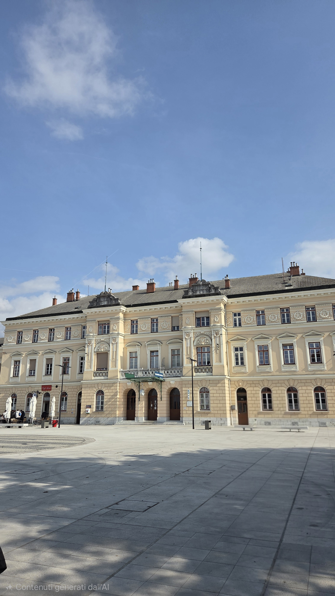
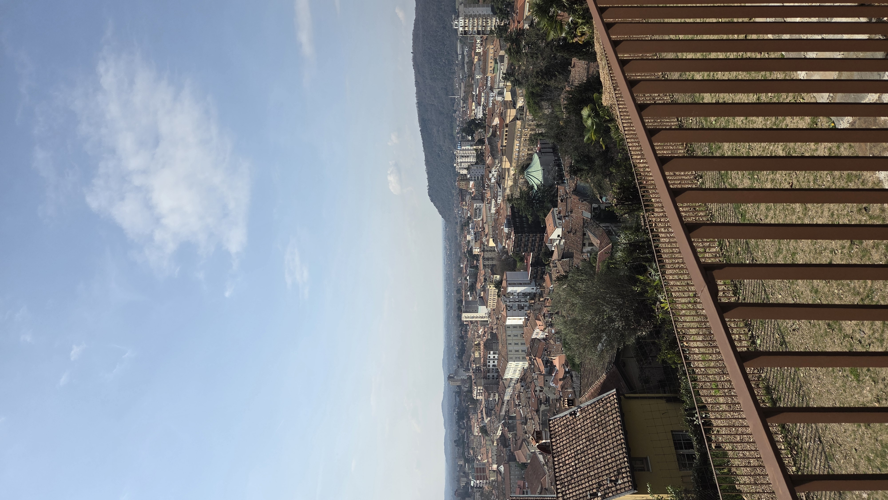

10 Maggio - Inizio del viaggio e la città divisa


Il nostro viaggio é iniziato la mattina del 10 Marzo. Io e la mia classe siamo saliti sul pullman in direzione della Croazia, fermandoci sulla strada per fare tappa alla cittá di Gorizia, nella regione del Friuli Venezia Giulia. Questa cittá si divide in una parte italiana ed una che va oltre il confine sloveno, in cui infatti si parla l'omonima lingua.
Uno dei punti principali della cittá é proprio la Piazza della Transalpina. Questa piazza è letteralmente tagliata a metà dal confine di stato tra l'Italia (Gorizia) e la Slovenia (Nova Gorica). Abbiamo potuto camminare con un piede in Italia e uno in Slovenia, osservando la targa circolare posta al centro che commemora l'ingresso della Slovenia nell'Unione Europea nel 2004 e la conseguente caduta dell'ultimo "muro" fisico tra le due città.
Dopo la visita e una breve pausa in cui abbiamo potuto pranzare, abbiamo ripreso il pullman per attraversare definitivamente il confine e dirigerci verso il nostro hotel in Croazia, il fantastico Hotel Katarina, dove abbiamo pernottato e avuto la cena di ogni giorno.